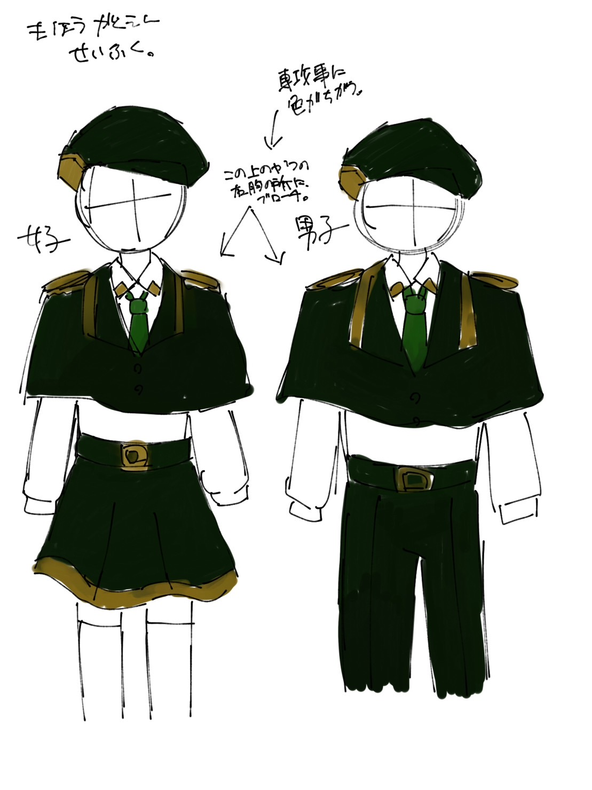

魔法学園
MAGIC ACADEMY
学園概要
コンソラトゥール国のコンソラトゥール都市にある、 国内最高峰の魔法学園。
魔法を持って生まれた者は、基本的に入学試験に合格すれば 入学することができる。
多くの人々から憧れられている学園であり、 魔法を学ぶための様々な専攻が設けられている。
専攻紹介
黒魔法専攻
主に攻撃系の魔法を学ぶ専攻。学園で最も人気が高い。
白魔法専攻
主に回復や防御に関する魔法を学ぶ専攻。
魔法剣士専攻
魔法剣士を目指すための専攻。
召喚士専攻
召喚士を目指すための専攻。
賢者専攻
黒魔法と白魔法の両方の知識が必要となる専攻。能力の高い生徒も多く選ぶ。
個人専攻
専攻とは別に、個別の科目を選んで学ぶこともできる。
学年制度
20歳以上になると学園を卒業し、仕事に就くことができる。 就職は可能だが、働くかどうかは本人の自由。
制服紹介

制服の基本デザインは全専攻共通。 専攻によってブローチの色が異なる。
専攻別ブローチカラー
帽子の着用は自由だが、コートは必ず着用しなければならない。 コートは魔法を使用する際にも重要な役割を持っている。
その他の制度
学園では、特別な条件を満たした場合に限り、 転入が認められることがある。
特に強い魔力を持つ生徒が、魔力を安定して扱えるように 学ぶための転入などがあるが、転入生は珍しい。